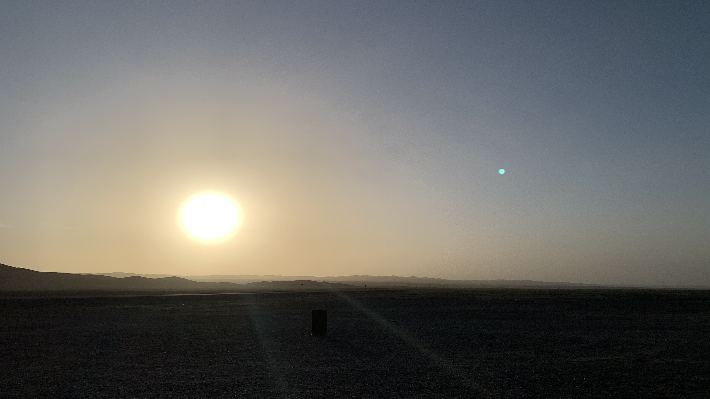
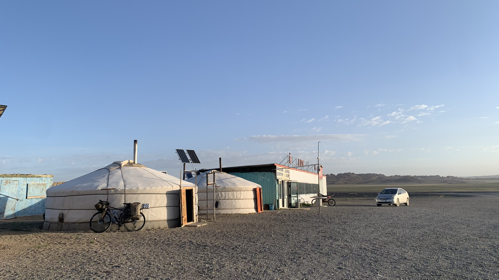
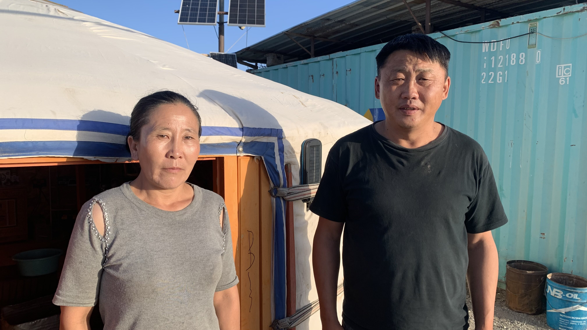

k-Day 105｜好客？
昨晚睡得舒服，凌晨四點半就醒了。

將睡袋塞回壓縮袋，推開木門往廁所的方向走。太陽剛剛升起來，這時間就起床堪稱奇蹟。

掛上行李，走到蒙古包和老闆夫婦道謝。

兩人似乎也剛睡醒，拍照後我遞上河童貼紙，從老闆恍惚的眼神中看見了疑惑。給小朋友貼紙時一般都會看到開心的表情，但是蒙古人好像沒有這種搜集貼紙的習慣，畢竟也不是隨身攜帶保溫杯、筆電之類，坐在咖啡廳裡面的習性。
今日花費： 水+蘋果茶+蘿蔔汁17000、水 4000、咖啡 7000、水+咖啡+果汁 8500元